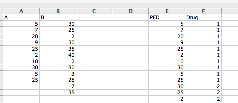
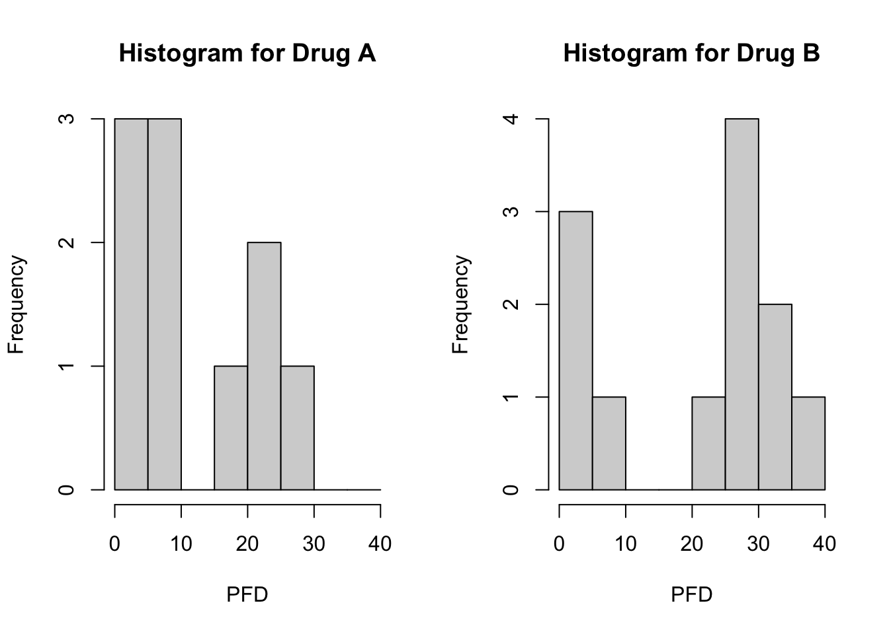
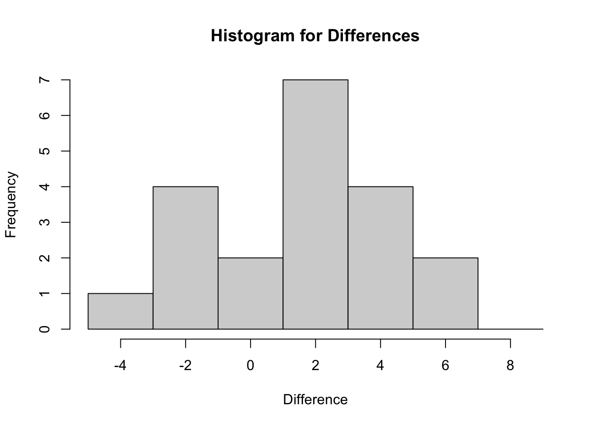
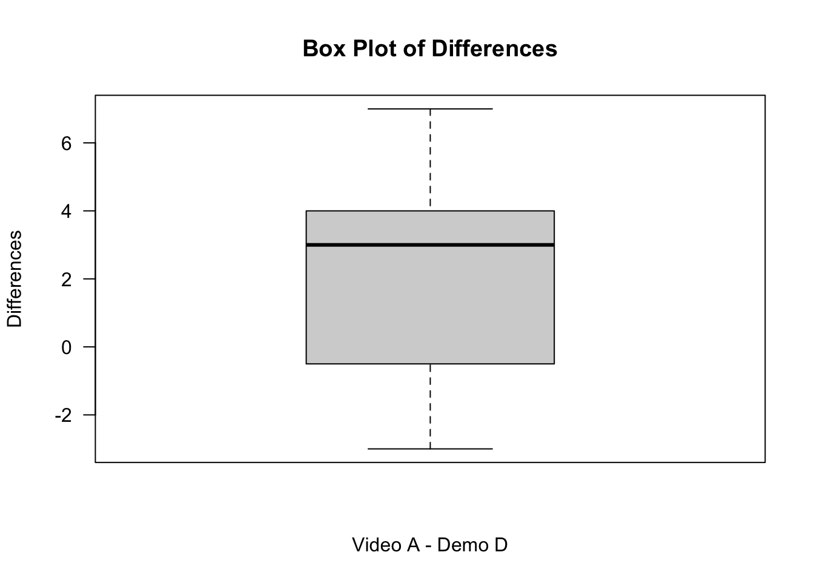

Please note that there is a file on Canvas called Getting started with R which may be of some use. This provides details of setting up R and Rstudio on your own computer as well as providing an overview of inputting and importing various data files into R. This should mainly serve as a reminder.
Recall that we can clear the environment using rm(list=ls()) It is advisable to do this before attempting new questions if confusion may arise with variable names etc.
Example 1
In this example we will elaborate on one of the lecture examples where we investigated the effectiveness of two different asthma drugs. The data is provided in the Asthma Drugs dataset, and the readings are peak flow meter differences for the two drugs. The dataset must first be adapted into an R friendly form, i.e. create a new column with all the peak flow measurements in one column, which I have called PFD, with an associated grouping variable, which I have called Drug. Remember to save your file as a csv file. Below is a snippet of my revised dataset:

Next, follow the step-by-step guide below,
Firstly, we input the dataset into R, check it using the “head” command (recall this provides the first 6 entries) and attach it.
A B X X.1 PFD Drug
1 5 30 NA NA 5 1
2 7 25 NA NA 7 1
3 20 2 NA NA 20 1
4 9 30 NA NA 9 1
5 25 35 NA NA 25 1
6 2 40 NA NA 2 1
attach(Asthma)
If the two samples are normally distributed then this would be the situation of an independent samples t-test (seen in MA-192). Therefore, we will first check the normality of drugs A and B. To do this, use the following code
shapiro.test(A)
Shapiro-Wilk normality test
data: A
W = 0.87786, p-value = 0.1233
shapiro.test(B)
Shapiro-Wilk normality test
data: B
W = 0.82685, p-value = 0.01923
and
install.packages("nortest")
library(nortest)lillie.test(A)
Lilliefors (Kolmogorov-Smirnov) normality test
data: A
D = 0.24576, p-value = 0.08832
lillie.test(B)
Lilliefors (Kolmogorov-Smirnov) normality test
data: B
D = 0.24234, p-value = 0.04996
Clearly the data are not normally distributed, therefore we proceed with the non-parametric equivalent test, the Mann-Whitney U-test. Before doing this, we investigate the shape of the distributions of the data. We will do this by creating histograms of the data. We create a factor for Drug and create side-by-side histograms for an easier comparison, noting the choice of “breaks” to provide better presentation, see the code below:
Drug<-factor(Drug,c(1,2),labels=c('Drug A','Drug B'))par(mfrow=c(1,2)) hist(PFD[Drug=='Drug A'], xlab='PFD', main='Histogram for Drug A', breaks=seq(from=0,to=40,by=5)) hist(PFD[Drug=='Drug B'], xlab='PFD', main='Histogram for Drug B', breaks=seq(from=0,to=40,by=5))

The histograms produced should show that both drugs have similar shaped distributions. Recall from the lectures that this allows us to effectively compare medians using the Mann-Whitney U-test. Without this, we would be testing whether the two groups follow the same distribution.
To perform the Mann-Whitney U-test, use the code below (Please note that the default option for pairing is false, i.e. a Mann-Whitney U test and not a Wilcoxon Signed-Rank test):
wilcox.test(PFD~Drug)
You will have obtain an error concerning ties when you use this approach. For cases where we have ties in the data we have to use the option ``exact=F”, see below:
wilcox.test(PFD~Drug, exact=F)
Wilcoxon rank sum test with continuity correction
data: PFD by Drug
W = 39, p-value = 0.1739
alternative hypothesis: true location shift is not equal to 0
Note that we may use the original data, i.e. side-by-side columns, but we have to adapt the code slightly to:
wilcox.test(A,B, exact=F)
Wilcoxon rank sum test with continuity correction
data: A and B
W = 39, p-value = 0.1739
alternative hypothesis: true location shift is not equal to 0
In both approaches check that you obtain a p-value of \(0.1739>0.05\), therefore we do not reject \(H_0\) and conclude that there is no difference between the medians of the two asthma drugs.
Please note that there is also the wilcox_test command within the “coin” package that can deal with ties, see
install.packages("coin")
library(coin)
Loading required package: survival
wilcox_test(PFD~Drug)
Asymptotic Wilcoxon-Mann-Whitney Test
data: PFD by Drug (Drug A, Drug B)
Z = -1.393, p-value = 0.1636
alternative hypothesis: true mu is not equal to 0
We obtain the same conclusion with this technique.
Exercise 1
The Reaction Times dataset contains the results of a trial measuring reaction times of 2 different groups of people, where one group is given water before the trial and the other group is given a new drink designed to reduce reaction times. Perform an appropriate statistical test to determine whether there is any difference in reaction times. Calculate the effect size.
Hint: Note that in order to obtain a \(Z\) value to calculate the effect size, the wilcox_test() command from the “coin” package will need to be used. Also remember how to import an SPSS file: either using the foreign package or use the Import Dataset command under Environment.
Example 2
In this example we will perform Example 2.9 in R. Using the Public Awareness dataset, we investigate whether there is any difference between a certain video (Video A) and a method using props (Demo D) in informing the public about a certain medical condition. The same participants evaluate each method. Please follow the steps below:
Firstly use the “Import Dataset” command in the “Environment” to import the dataset.
We could be mistaken to think that this is a situation where we use a paired t-test. Perform a test of normality on the differences to check one of the main conditions of this test using,
shapiro.test(Public_Awareness$Difference)
Shapiro-Wilk normality test
data: Public_Awareness$Difference
W = 0.95299, p-value = 0.4147
Lilliefors (Kolmogorov-Smirnov) normality test
data: Public_Awareness$Difference
D = 0.15672, p-value = 0.2223
Note that we do not have evidence to reject the normality of the data. However, if we look carefully at the dataset, we see that we are dealing with ordinal data and therefore the Wilcoxon Signed-Rank test is an option (the assumption of continuous data of the paired t-test is not met since there are only 4 ordered categories - recall that 7 or more are required to be classed as continuous).
We next investigate the shape of the differences using a histogram and boxplot in order to determine the correct hypotheses, see
hist(Public_Awareness$Difference, xlab='Difference', main='Histogram for Differences', breaks=seq(from=-5,to=10, by=2))

boxplot(Public_Awareness$Difference, main="Box Plot of Differences", ylab="Differences", xlab="Video A - Demo D", las=1)

From your output you should be able to see that the differences do appear to be symmetric.
Wilcoxon signed rank test with continuity correction
data: Public_Awareness$TotalAGen and Public_Awareness$TotalDDEMO
V = 167.5, p-value = 0.003558
alternative hypothesis: true location shift is not equal to 0
The test statistic is significant, therefore we conclude that median difference is significantly different to 0.
The medians can be calculated using
median(Public_Awareness$TotalAGen)
[1] 24
median(Public_Awareness$TotalDDEMO)
[1] 22
As the median of Video A is 24 and that of Demo D is 22, we conclude that Video A seems to be more effective.
The coin package has an alternative function for this procedure, however the data must be presented differently, i.e. one column containing the data and a grouping variable. I have created a new file called Public Awareness Revised to do this. Import this dataset and use the relevant code below:
Asymptotic Wilcoxon-Pratt Signed-Rank Test
data: y by x (pos, neg)
stratified by block
Z = 5.5779, p-value = 2.434e-08
alternative hypothesis: true mu is not equal to 0
Exercise 2
The Reorganisation Salaries dataset contains the salaries of individual employees before and after a reorganisation. Investigate whether there is any statistically significant difference in the salaries before and after the reorganisation, justifying fully the procedure used.
Hint: The differences are not provided in the dataset, therefore you must create a new dataset which includes a new column containing the differences. Either do this in Excel before importing the data or use the following code in R:
Salaries.new <-transform(Salaries, Differences = Before - After)Salaries.new